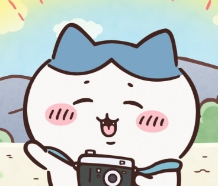
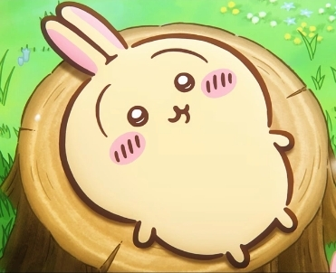
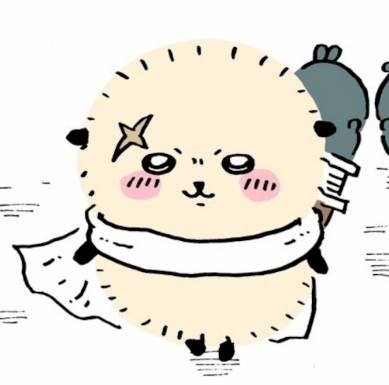
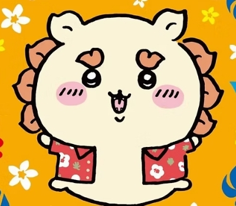
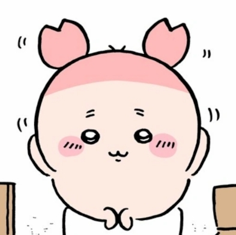

🎒
🍺
PROFESSIONAL 5-SCALE MEASUREMENT
Chiikawa
Chiikawa
奇幻靈魂角色大測試
本測驗完美移植 **MBTI (16Personalities)** 評分機制。涵蓋 40 題全方位情境問答，從社交、認知、決策及生活步調，科學匹配你在 Chiikawa 世界中對應的 8 大靈魂角色！





社交與能量來源
1 / 40
QUESTION
正在用心載入題目中...
直覺作答，點選後自動跳轉